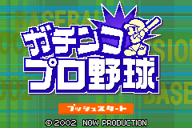
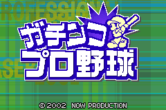

Gachinko Pro Yakyuu (Japan)
SRAM 256K Save Format Spec gbakit Built-In 💾 MultiBoot
Cartridge Identity
- Game Code
ANYJ(FamilyANY)- Header Title
GACHINKOPRO- Maker / Revision
0N/ rev0- ROM Size
- 8.0 MiB (8,388,608 B)
- Save Media
SRAM 256K- SHA-256
a5e996830622f7f5499d1ce9471c2fa97fe217111e1677b5246de9f5478765d8- Engine / SDK Group
comm-002(145 families)
Screenshots


Link Cable & Multiplayer Communications
This title contains detected communication capabilities: 💾 MultiBoot.
Detailed protocol specifications, SIO registers, Joybus commands, and MultiBoot sequences are documented in the Link & Multiplayer Reference.
- Single-Cart MultiBoot
- Single-Cartridge MultiBoot (Download Play) client/server handler · Thumb SWI 0x25 (
0xDF25):0x1cae5c,0x33f5da
Battery Save Format Specification
Open Full Save Format SpecDownload save-format.json
- Specification Coverage
- 4 mapped fields · 0 verified checksum(s) · Confidence: HIGH
- gbakit Built-In Support
- Built-in (ANYJ)
gbakit save verify ANYJ save.sav
gbakit save decode ANYJ save.sav
gbakit save fix ANYJ damaged.sav -o repaired.savObserved Battery Save Layout
- Fill Byte & Active Size
0x00fill · 14,166–14,166 / 32,768 B active (entropy 4.24 bits/B)- Active Offset Ranges
0x0–0x3,0x6–0x9,0x24–0x26,0x28–0x29,0x3A–0x3F,0x42–0x45,0x4B,0x4D, +8 more (2510 total)- ASCII Magic / Headers
333333333333333333DDDDDDDDDDDDDD,DDDDUUUUUUUUUUUUUUUUUUUUUUUUUUUU,GACHI0.980- Observed Variable Regions
- 0 bytes across 0 spans: None
- Candidate Checksum/Counter Spans
- None
ROM Assets, Compression & Audio
- BIOS Compression
- LZ77 (
0x10): 1 streams · RLE (0x30): 0 streams - ROM Pointer Tables
- 60 tables (0 pointing to validated compressed streams)
- SDK Backup Tags
SRAM_F_V102
Asset Map (formatkit.asset-map.v1)
Download ANYJ-r0-a5e996830622f7f5.asset-map.json.gz (68,273 B (66.7 KiB)) Verified PASS · 8.17% coverage
| Metric | Bytes / Value | Entries |
|---|---|---|
| Identified | 159,124 B (155.4 KiB) (1.90%) | 551 |
| Mapped | 0 B (0.00%) | 0 |
| Opaque | 526,608 B (514.3 KiB) (6.28%) | 1 |
| Unknown | 7,702,876 B (7.35 MiB) (91.83%) | 545 |
| Total ROM Size | 8,388,608 B (8.00 MiB) | 1,097 |
| Coverage % | 8.17% | — |
| Entries w/ Code Refs | 573 / 1,097 (52.23%) | — |
Top Identified Formats: gfx.gba-palette (548 · 116,896 B (114.2 KiB)) · compress.bios-rle (1 · 39,812 B (38.9 KiB)) · audio.m4a-song-table (1 · 2,224 B (2.2 KiB)) · gba.rom-header (1 · 192 B)
Largest unknown Extents (Headerless / Custom Asset Candidates)
| Offset | Size | Shannon Entropy | Code Refs |
|---|---|---|---|
0x004E6044 | 1,227,720 B (1.17 MiB) | 4.454 bits/B | 0 |
0x0025B2D0 | 556,352 B (543.3 KiB) | 6.388 bits/B | 0 |
0x00383F20 | 552,960 B (540.0 KiB) | 7.123 bits/B | 0 |
0x00690A68 | 519,712 B (507.5 KiB) | 4.235 bits/B | 0 |
0x002E5E98 | 501,608 B (489.9 KiB) | 7.114 bits/B | 0 |
gzip -dk ANYJ-r0-a5e996830622f7f5.asset-map.json.gz && gbakit map verify rom.gba ANYJ-r0-a5e996830622f7f5.asset-map.json
gbakit assets export rom.gba --asset-map ANYJ-r0-a5e996830622f7f5.asset-map.json -o out/Text, Fonts & Scene Data
- Primary Text Encoding
- 16-bit / UTF-16LE text (
13ASCII strings) - Font & VWF Indicators
- VWF Width Table 1bpp Font · BIOS SWIs: BitUnPack
0x10:0· LZ770x11/12:2· Huffman0x13:3· RLE0x14/15:0 - Scene & Packaging
30ROM pointer tables (≥32 entries,0≥200) ·26relativeu32TOCs ·309OAM metasprite hits
Hardware MMIO Subsystems
ppu_display0x8044754,0x8045670,0x8070678save_bus_sram_flash0x808429c